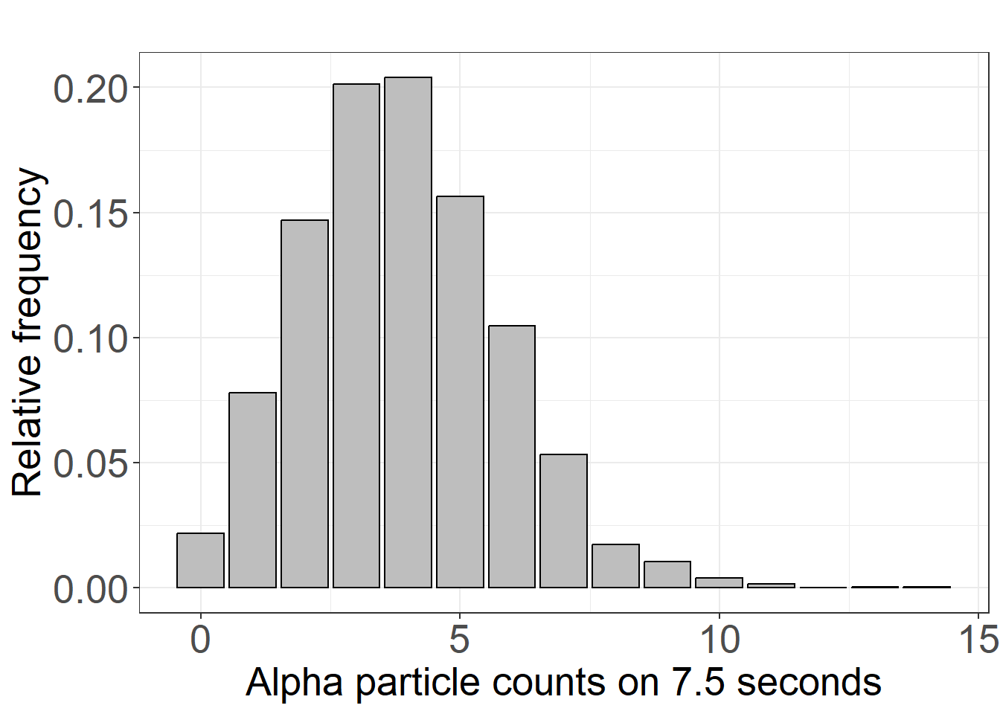

Chapter 12 Maximum likelihood
n 1922, R.A. Fisher published a seminal paper that laid the foundations of modern mathematical statistics (R. A. Fisher 1922). While important statistical techniques—such as regression analysis and tests of goodness-of-fit—had already been developed, their mathematical underpinnings had remained largely unformalized. This lack of rigor, Fisher argued, was partly due to the nature of the field, which deals with uncertainty and error, and where precise definitions were often not considered practically necessary.
Another major source of confusion was linguistic: the same terms were often used to refer both to the unknown quantities that researchers sought to estimate (parameters) and to the values computed from data (estimates). For example, think of the distinction between \(\mu\), the expected value of a normal random variable, and \(\bar{x}\), the sample mean used to estimate it. Clarifying such distinctions was a crucial step in the formalization of statistical inference, enabling the generalization of estimation methods to a wide variety of models.
In this chapter, we will explore what an estimator is and illustrate its use in general applications such as radioactive detection, biodiversity estimation, and the analysis of system complexity. We will introduce a general framework for obtaining estimators of model parameters, focusing in particular on the method of maximum likelihood, first introduced by Fisher. Fisher’s key insight was to treat the likelihood of the observed values of random samples as a function of the unknown parameters, allowing for a principled method to derive estimates.
12.1 Statistic
It is time to formalize some of the notions that we have already dealt with. The intention of using a more precise language is to be able to generalize the basic concepts to any type of probability models. In particular, we need to formalize the notion of statistics, estimator and their properties, such as the error we can make when estimating a parameter with the observed value of an estimator.
To extract useful information of a random experiment from the sample we use statistics.
Definition
A statistic is any function of a random sample \[T(X_1,X_2, ..., X_n)\]
It usually returns a number, but frequency tables and plots like histograms can also be considered statistics. Statistics are random variables and their probability distributions are called sampling distributions.
Statistics have different functions:
- Description of a sample’s data
- location: \(\bar{X}\)
- Minimum: \(\min\{X_i\}\)
- Maximum: \(\max\{X_i\}\)
- Estimation of a probability model’s parameters
- We use \(\bar{X}\) to estimate \(\mu\)
- We use \(S^2\) to estimate \(\sigma^2\)
- Inference for predicting the outcomes of the estimators
- for the mean we will use the statistics \(Z\), \(T\)
- for the variance we will use \(\chi^2\)
This last point will be developed in the following chapters.
The key fact is that statistics are random variables whose observed values we take as information about the experiment. However, every time we take a new sample their value change.
Definition of estimators
An estimator is a statistic whose observed values are used to estimate the parameters of the probability model used to describe the outcome of the random experiments under study. When we use an estimator, the information that we are interested in extracting is the properties of the random experiment encoded in the parameters.
If we write the probability model of the random experiment as the probability function
\[X \rightarrow f(x; \theta)\]
then \(\theta\) is a parameter and the statistics \(\Theta\) is a random variable whose observations \(\hat{\theta}\) we take as estimations of \(\theta\). The estimate \(\hat{\theta}\) is a numerical value obtained by evaluating the estimator \(\Theta\) on the data and is used as an approximation of the unknown parameter \(\theta\).
\[\hat{\theta} \approx \theta\]
Let us unpack this statement. There are three different quantities that we must consider:
- \(\theta\) is a parameter of the probability model that describes the experiment \(f(x; \theta)\).
- \(\Theta\) is an estimator of \(\theta\): A random variable.
- \(\hat{\theta}\) is the point estimate of \(\theta\): An outcome or a realized value of \(\Theta\).

Example (Sample mean)
When the probability density function for the outcomes of a random experiment is modeled by a normal density
\[X \rightarrow N(\mu, \sigma^2)\]
we can identify the three different quantities:
- The mean: \(\mu\) is a parameter of the population distribution \(N(\mu, \sigma^2)\).
- The average: \(\bar{X}\) is an estimator of \(\mu\).
- The point estimate of the mean: \(\bar{x}=\hat{\mu}\) is the estimate of \(\mu\).
Example (Sample variance)
When we have a normal random variable
\[X \rightarrow N(\mu, \sigma^2)\]
- \(\sigma^2\) is a parameter of the population distribution
- \(S^2\) is an estimator of \(\sigma^2\)
- \(s^2=\hat{\sigma}^2\) is the estimate of \(\sigma^2\)
12.2 Properties
The estimators have important properties that allow us to determine the type of errors we can make when using them to estimate parameters. There are two types of error: the systematic error measured by the bias, and the random error measured by the variability of the sample. When there is low systematic error we say that the estimate is accurate (low bias) and if the observations from the sample do no vary much between then we say that the estimate is precise.
- An estimator \(\Theta\) is unbiased if its expected value is the parameter
\[E(\Theta)=\theta\]
Therefore, the estimator is accurate and does not have systemic error.
For example:
\(\bar{X}\) is an unbiased estimator of \(\mu\) because \(E(\bar{X})=\mu\)
\(S^2\) is an unbiased estimator of \(\sigma^2\) because \(E(S^2)=\sigma^2\)
- An estimator is consistent when its observed values get closer and closer as the sample size is increased
\[lim_{n\rightarrow \infty} V(\Theta) = 0\]
Therefore the estimator is increases precision when the sample size increases.
For example:
- \(\bar{X}\) is consistent because \(V(\bar{X})=\frac{\sigma^2}{n}\rightarrow 0\) when \(n \rightarrow \infty\).
- The mean squared error \(mse\) of \(\Theta\) is its expected squared difference from the parameter
\[mse(\Theta)=E([\Theta - \theta]^2)\]
or equivalently is the sum of the errors in consistency and bias
\[mse(\Theta)=se^2 + bias^2\]
where \(se=\sqrt{V(\Theta)}\) is the standard error. Efficient estimators are those with the lowest variance among unbiased estimators.
12.3 Maximum likelihood
Now that we know what estimators are and what makes them good, we need a method to derive them from data. The method of maximum likelihood does this by choosing an observed value of the estimator as a likely value of a parameter that which makes the observed data most probable. Remember that the parameter is un-observable and, if we do not know its theoretical value, we are trying to learn its most likely value using experimental data.
How can then we obtain estimators of the parameters of any probability model? The method of maximum likelihood offers a strategy to propose estimators.
Example (Alpha particles)
In 1910, Rutherford y Geiger counted the number of \(\alpha\) particles that a specimen of polonium would emit each \(7.5\) seconds. The absolute frequencies that they reported for the number of particles each \(7.5\) seconds from a total of \(2608\) observations were
\[ \begin{array}{cc} \mathbf{outcome} & \mathbf{n_i} \\ 0 & 57 \\ 1 & 203 \\ 2 & 383 \\ 3 & 525 \\ 4 & 532 \\ 5 & 408 \\ 6 & 273 \\ 7 & 139 \\ 8 & 45 \\ 9 & 27 \\ 10 & 10 \\ 11 & 4 \\ 12 & 0 \\ 13 & 1 \\ 14 & 1 \\ \hline \mathbf{sum} & 2608 \\ \end{array} \]

They observed, for instance, that \(57\) of the times they did not observed any particle within \(7.5\) seconds, \(203\) of the times they counted one particles within \(7.5\) seconds, etc. They wanted to show that particles were emitted from independent sources (atoms) and find a probabilistic model for the counts.
What is a probability function that can describe the data?
Proposing a probability model
To answer the question on how to select a probabilistic model when we have some data, we follow the steps:
Step 1. we propose probability function on the nature of the random variable (continuous or discrete) that depends on parameters,
Step 2. we derive the estimators for the parameters, by maximum likelihood,
Step 3. finally, we use the estimator to estimate the parameters with the data.
In many applications, we can propose parametric models that is a model that belongs to a family of a probability functions that depends on some parameters. Proposing a probability model is done by following the general properties of the observations, or by what we expect to observe. Modelling requires experience, skill and knowledge of several mathematical functions. However, in most cases well known models are typically applied.
Example (Alpha particles)
In the appendix of Rutherford and Geiger’s paper, Bateman showed that if there were independent sources alpha particles, the number of particles detected in a time interval would follow a Poisson distribution. That is
\[X \sim Poisson (\lambda)\]
Therefore, once selected the theoretical model, they needed to find the value of the parameter \(\lambda\) for their data.

Many values of the parameters could explain the data. We are interested in one criterion to choose one particular value.
The maximum likelihood method will gives us the estimator for \(\lambda\)
\[\hat{\lambda}_{ml}\] using an optimal probabilistic argument.
12.4 Maximum likelihood
The objective is to find the value of the parameter that we believe can best represent the data.
The method of maximum likelihood is based on the search for the parameter value that makes the observation of the sample the most probable.
Remember, a random sample is a random variable \[M=(X_1,...X_n)\] an observed sample is an outcome of \(M\), a set of numerical values that we actually obtained when we repeated the random experiment
\[m=(x_1,...x_{n=2608})=c(10, 14, ... 0, 4)\]
Maximum likelihood step 1
First, we calculate the probability of having observed the particular \(n\)-sample: \(x_1,...x_n\). This is the product of probabilities for each observation because the repetitions of the random experiment are independent of one another. If the probabilistic model of is
\[X \sim f(x, \theta)\] Then the probability of observing the data is
\(P(M=x_1,...x_n)=P(X=x_1)P(X=x_2)...P(X=x_n)\) \[=f(x_1;\theta)f(x_2;\theta) ...f(x_n;\theta)\] We call this function the likelihood function and we consider that:
- Once the data are observed, they are fixed
- The unknown is the parameter \(\theta\)
\[L(\theta)= \Pi_{i=1..n} f(x_i; \theta)\]
Example (Alpha particles)
For the alpha particle experiment the model in Poisson
\[X \sim f(x; \lambda)= \frac{e^{-\lambda}\lambda^x}{x!}\] and the unknown the parameter \(\lambda\). Therefore, the likelihood is
\(L(\lambda;x_1,..x_n)= \frac{e^{-\lambda}\lambda^{x_1}}{x_1!}\frac{e^{-\lambda}\lambda^{x_2}}{x_2!}...\frac{e^{-\lambda}\lambda^{x_n}}{x_1!}=\)
\[\frac{e^{-n\lambda}\lambda^{\sum {x_i}}}{x_1!x_2!..x_n!}\]
Maximum likelihood step 2
We then ask: what is the value of \(\theta\) that makes the observed sample the most probable event? We thus want to maximize \(L(\theta)\) with respect to \(\theta\). Since we have the multiplication of many factors, it is easier to maximize the logarithm of \(L(\theta)\). This is called the log-likelihood function:
\[\ln L(\theta;x_1,..x_n)\]
Example (Alpha particles)
In the alpha particles example, we therefore take the logarithm and obtain the Log-likelihood
\[\ln L(\alpha;x_1,..x_n)= -n\lambda - \sum{x_i}\ln(\lambda)-\ln(x_1!x_2!...x_3!)\]
Maximum likelihood step 3
Finally we maximize the log-likelihood with respect to the parameter. Therefore, we differentiate the log-likelihood with respect to the parameter \(\theta\), equate to zero and solve for the maximum.
\[\frac{d \ln L(\theta)}{d \theta} \big|_{\hat{\theta}}=0 \] The value of the parameter at the maximum is called the maximum likelihood estimate for the parameter and it is written with a hat \(\hat{\theta}\).
Example (Alpha particles)
We derive the log-likelihood
\[\frac{d \ln L(\lambda)}{d \lambda}= -n + \frac{\sum{x_i}}{\lambda}\] The maximum is where the derivative is \(0\). This maximum is the value of our estimator \(\hat{\lambda}_{ml}\).
\[\hat{\lambda}_{ml}=\frac{1}{n}\sum_{i=1}^{n}\]
The estimator of the parameter is therefore (note the capital letters)
\[\Lambda=\frac{1}{n}\sum_{i=1}^{n}\]
Which is a the sample mean, a random variable function of the random sample
\[(X_1, X_2, ... X_n)\]
We then have the fact that the sample mean is the maximum likelihood estimator of the parameter \(\lambda\) of a Poisson model.
Estimating the parameters with the data
In our example, we then have the observation of the random sample as a set of 2608 numbers \((x_1, x_2, ...x_{2608})\), we therefore substitute the numbers in the estimator and this will give us its observed value.
\[\hat{\lambda}_{ml}=-\frac{1}{n}\sum_{i=1}^{n} =\sum_{i=1}^{n} x_if_i =3.871549\]
Using the relative frequency table. Therefore, the maximum likelihood estimate of the parameter is \(3.871549\), as reported by Rutherford and Gaiger. If we substitute this value in the probability function, and overlay it with the bar plot, we can see that it gives us a suitable description of the data.

Let us look at the log-likelihood function for the \(2608\) observations. Remember, data is fixed the data of the experiment and that \(\lambda\) varies. The function has a maximum. However, if we take another sample this function changes and so does its maximum.

Example (Number of Individuals per Species)
In another influential work, Fisher and colleagues analysed the number of individuals for each moth species that was captured over 4 years at Rothamsted Experimental Station (R. A. Fisher, Corbet, and Williams 1943). This is their data aggregated in absolute frequencies
\[ \begin{array}{cc} \mathbf{outcome} & \mathbf{n_i} \\ 1 & 102 \\ 2 & 41 \\ 3 & 18 \\ 4 & 12 \\ 5 & 8 \\ 6 & 5 \\ 7 & 1 \\ 8 & 2 \\ 9 & 1 \\ 10 & 2 \\ 12 & 1 \\ 13 & 1 \\ 16 & 1 \\ \hline \mathbf{sum} & 195\\ \end{array} \]
that represents the number of individuals observed for a species during the four years campaign. This is \(102\) species were observed only once, \(42\) species twice and so on. The random variable \(X\) is then the number of events in a period of time on a particular species. Here the species is the observation unit or the repetition of the random experiment. The random experiment was repeated 195 times, and Fisher proposed that the random variable \(X\) followed a log-series distribution
\[X \sim \frac{-\theta^x}{x\ln(1-\theta)}\]
where \(\theta \in (0,1)\), rather than a Poisson distribution.
To find the value of \(\theta\) we can use the method of Maximum Likelihood, where we first propose the likelihood of the data
\[ L(\theta) = \prod_{i=1}^{n} \left( -\frac{\theta^{x_i}}{x_i \log(1 - \theta)} \right) \]
Where \(x\) is the dis-aggregated data, one observation (number of counts in 4 years) per species \((1, 1, ...1_{102}, 2, ...2_{41}, ..., 12, 13, 16)\). We can then optimize the logarithm of \(L(\theta)\).
\[ \ln L(\theta) = \sum_{i=1}^{n} \ln\left( -\frac{\theta^{x_i}}{x_i \ln(1 - \theta)} \right) \]
While the solution cannot be written in terms of known functions, we can solve it numerically, giving the maximum at
\[\hat{\theta}=0.77\]
As reported by Fisher.

He also defined the biodiversity index \[\alpha=N \frac{1-\theta}{\theta}\sim 134.1\] Were \(N=449\) is the total number of individuals observed. This value represents a system of high richness-many species are present- and high evenness-individuals are fairly well distributed among species.
Example (The Normal Distribution)
Gauss used astronomical data from Giuseppe Piazzi to infer the true position of Ceres at a given time, Gauss derived the error function
\[f(x; \mu, \sigma^2)= \frac{1}{\sigma \sqrt{2 \pi}} e^{-\frac{1}{2\sigma^2} (x-\mu)^2}\]
Where the true position of Ceres was the mean \(\mu\), or the expected value of the outcomes. How did Gauss combined the data for having the best estimate for the position of Ceres?
What is the statistic that can describe best its position?

In modern times, this question can be formulated as: What is the maximum likelihood estimator of \(\mu\) for a random normal variable?
Maximum likelihood of the normal distribution
For a random normal variable
\[X \rightarrow N(\mu, \sigma^2)\].
What are the estimators of \(\mu\) and \(\sigma^2\) that maximize the probability of the observed data?
We follow the maximum likelihood method:
Step 1. The likelihood function, or the probability of having observed the sample \((x_1, ....x_n)\) is
\(L(\mu, \sigma^2)=\Pi_{i=1..n} f(x_i;\mu,\sigma)\)
\[=\big( \frac{1}{\sigma \sqrt{2 \pi}}\big)^n e^{-\frac{1}{2\sigma^2} \sum_i(x_i-\mu)^2}\]
Step 2. We take the log of \(L\), and compute the log-likelihood
\[\ln L(\mu, \sigma^2)=-n \ln(\sigma \sqrt{2 \pi})-\frac{1}{2\sigma^2} \Sigma_i(x_i-\mu)^2\]
The estimates of \(\mu\) and \(\sigma^2\) are where the likelihood is maximum. They give the highest probability for the data.
Step 3. We differentiate with respect to \(\mu\) and \(\sigma^2\). These two derivatives give us two equations, one for each of the parameters. For deriving respect to \(\sigma^2\), it is easier to make a substitution \(t=\sigma^2\).
\(\frac{d \ln L(\mu, \sigma^2)}{d\mu}=\frac{1}{\sigma^2} \sum_i(x_i-\mu)\)
\(\frac{d \ln L(\mu, \sigma^2)}{d\sigma^2}=-\frac{n}{2 \sigma^2}+\frac{1}{2\sigma^4} \sum_i(x_i-\mu)^2\)
The derivatives are \(0\) at the maxima
- \(\frac{1}{\hat{\sigma}^2} \sum_i(x_i-\hat{\mu})=0\)
- \(-\frac{n}{2 \hat{\sigma}^2}+\frac{1}{2\hat{\sigma}^4} \sum_i(x_i-\hat{\mu})^2=0\)
solving both equations for the parameters we find for \(\mu\)
\[\hat{\mu}_{ml}=\frac{1}{n}\sum_i x_i=\bar{x}\]
and for \(\sigma^2\)
\[\hat{\sigma}^2_{ml}=\frac{1}{n}\sum_i(x_i-\bar{x})^2\]
Therefore, the sample mean (average) \(\bar{X}\) is the maximum likelihood estimator of the mean \(\mu\). Gauss showed that the statistics that we should trust most (that with highest likelihood) for the real position of the Ceres was the average. Gauss solving the position of Ceres, not only discovered the normal distribution, but also created the regression analysis and showed the importance of the average. It is due to him that we often use the average as a preferred statistics, assuming that the observations follow a normal distribution.
In addition, the maximum likelihood estimator of \(\sigma^2\) is a biased estimator because it can be shown that \[E(\hat{\sigma}^2_{ml})=\sigma^2-\frac{\sigma^2}{n}\neq \sigma^2\]
It was Fisher who showed that this estimator was important, as he used it to generalize the central limit theorem.
12.5 Questions
1) An estimator is not
\(\qquad\)a: a statistic; \(\qquad\)b: a random variable; \(\qquad\)c: discrete; \(\qquad\)d: an observation of the parameter;
2) An estimator is unbiased if
\(\qquad\)a: it is the parameter that it estimates; \(\qquad\)b: depends on \(1/n\); \(\qquad\)c: its variance is small; \(\qquad\)d: its expected value is the parameter it estimates;
3) An estimator is consistent if
\(\qquad\)a: it is the parameter that it estimates; \(\qquad\)b: depends on \(1/n\); \(\qquad\)c: its variance is small; \(\qquad\)d: its expected value is the parameter it estimates;
4) The maximum likelihood method
\(\qquad\)a: Produces estimators based on the probability of the observations; \(\qquad\)b: produces unbiased estimators; \(\qquad\)c: produces consistent estimators; \(\qquad\)d: produces estimators equal to those of the method of moments;
12.6 Exercises
12.6.0.1 Exercise 1
Take a random variable with the following probability density function
\[ f(x)= \begin{cases} (1+\theta)x^\theta,& \text{if } x\in (0,1)\\ 0,& x\notin (0,1) \end{cases} \]
What is the maximum likelihood estimator for \(\theta\)?
If we take a \(5\)-sample with observations \(x_1 = 0.92; \qquad x_2 = 0.79; \qquad x_3 = 0.90; \qquad x_4 = 0.65; \qquad x_5 = 0.86\)
What is the estimated value of the parameter \(\theta\)?
- Compute \(E(X)=\mu\) as a function of \(\theta\). What is the maximum likelihood estimator for \(\mu\)?
12.6.0.2 Exercise 2
For a random variable with a binomial probability function
\[f(x; p)=\binom n x p^x(1-p)^{n-x}\]
What is the maximum-likelihood estimator of \(p\) for a sample of size \(1\) of this random variable?
In one exam of \(100\) students we observed \(x_1=68\) students that passed the exam. What is the estimate of the \(p\)?
12.6.0.3 Exercise 3
Take a random variable with the following probability density function
\[ f(x)= \begin{cases} \lambda e^{-\lambda x},& \text{if } 0 \leq x\\ 0,& otherwise \end{cases} \]
What is the maximum likelihood estimator for \(\lambda\)?
If we take a \(5\)-sample with observations \(x_1 = 0.223 \qquad x_2 = 0.681; \qquad x_3 = 0.117; \qquad x_4 = 0.150; \qquad x_5 = 0.520\)
What is the estimated value of the parameter \(\lambda\)?
What is the maximum likelihood estimator of the parameter \(\alpha=\frac{n}{\lambda}\)
Is \(\alpha\) an unbiased and consistent estimator of the mean of the sample sum \(E(Y)\), where \(Y=\sum_1^n X_i\)?